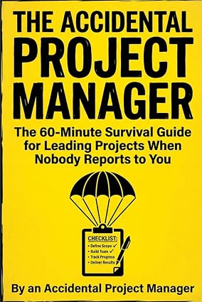

Start with a clear brief.
Use the first-48-hours framework and a one-page project canvas to clarify the outcome, deadline and decision maker.
CANOD / PRACTICAL GUIDES
The Accidental Project Manager
You have a deadline, a day job, and colleagues who do not report to you. This short guide gives you a practical starting point for agreeing scope, assigning owners, and keeping the work moving.
By An Accidental Project Manager · English · 82-page paperback
Amazon.com: US$9.99 paperback / US$3.99 Kindle, observed October 26, 2026. Check Amazon for the current price, taxes, shipping and delivery options.

Published paperback coverUSE IT ON YOUR NEXT PROJECT
Use the first-48-hours framework and a one-page project canvas to clarify the outcome, deadline and decision maker.
Find scripts for scope changes, competing priorities and requests that need a trade-off.
Use the ownership matrix, risk register, decision log and short weekly update templates.
Written for individual contributors, coordinators and first-time project leads who need a compact reference alongside their existing work. It is not a certification course, a comprehensive project-management textbook, or a substitute for regulated project controls.
The subtitle describes it as a 60-minute survival guide; reading and applying the tools will vary by reader. Use Amazon's Read sample feature before purchasing.
BOOK DETAILS
Published September 14, 2026.
ISBN-13: 9798174213630
Paperback ASIN: B0HJZZLKCG
Kindle ASIN: B0HJZ79VLC
Purchases take place on Amazon. CANOD does not collect payment details on this website.
Book, library or publication enquiries: hello@canod.ca